Protegemos reputaciones
Investigamos sospechas, indicios o denuncias internas con metodología forense, evidencia y confidencialidad, en Estados Unidos, México y América Latina.
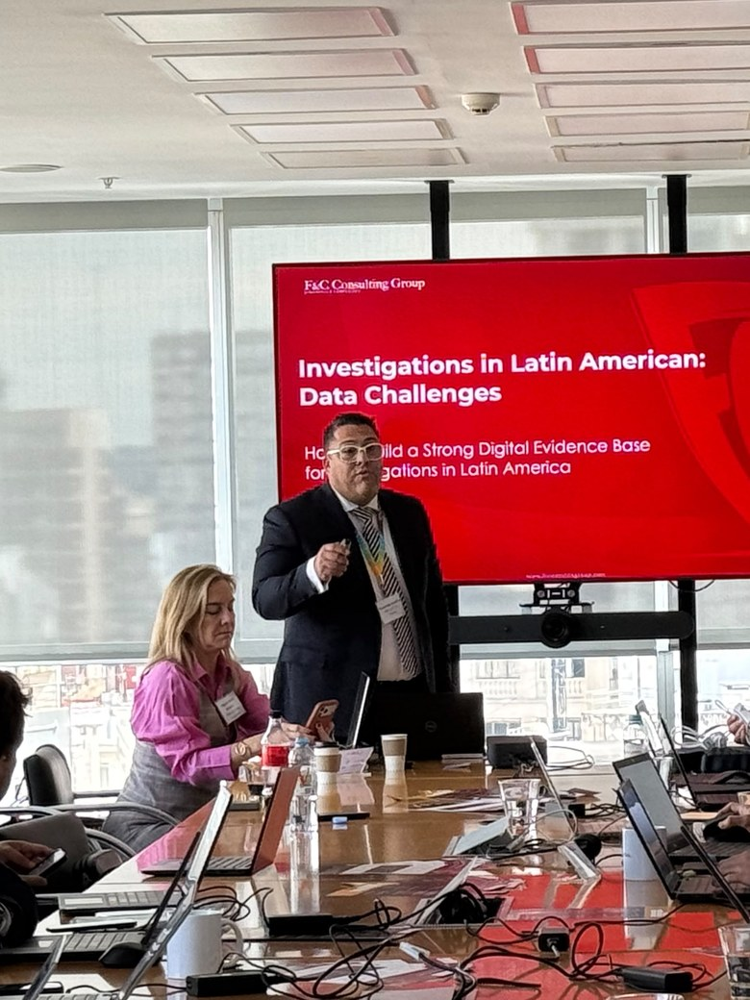
Empresas y líderes confían en nosotros.
Eso es F&C
“Necesitábamos claridad para tomar decisiones delicadas sin comprometer la operación. El acompañamiento fue estratégico y altamente profesional.”
 Director GeneralEmpresa de manufactura, México
Director GeneralEmpresa de manufactura, México“Pasamos de sospechas e incertidumbre a un plan concreto para identificar la causa raíz y fortalecer controles.”
 Chief Compliance OfficerConstructora, América Latina
Chief Compliance OfficerConstructora, América LatinaTrabaja con especialistas
en investigación y compliance
Nuestro equipo reúne especialistas en investigación forense, compliance, control interno y seguridad de la información en Estados Unidos, México y América Latina. Los casos sensibles no se delegan: trabajas directamente con quien lleva tu caso.
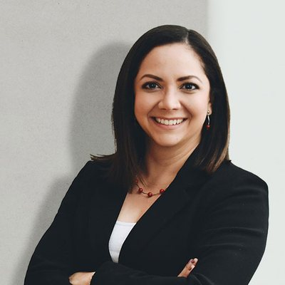
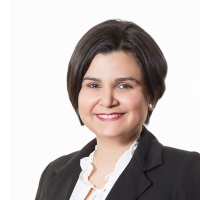
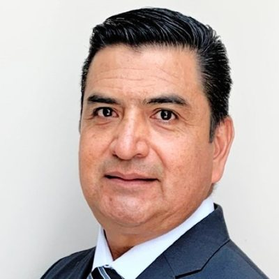
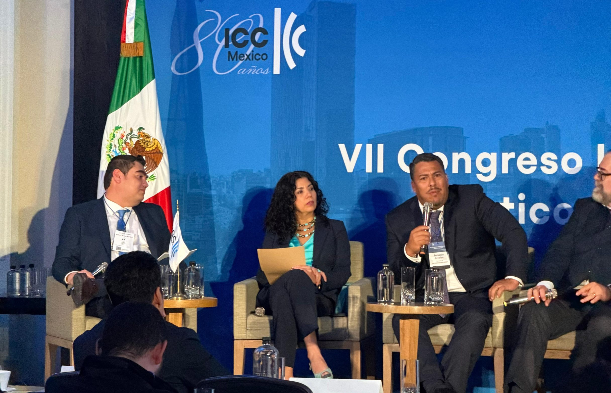
Visión global con entendimiento local en cada caso
Actuamos con visión global y entendimiento local para generar impacto real. Atendemos organizaciones en Estados Unidos, México y América Latina.
Investigaciones con metodología estructurada
Estrategia y trazabilidad con un objetivo: encontrar la causa raíz y proteger tu operación.
10
Años de trayectoria como firma5
Etapas de metodología forenseEntendemos la situación, mapeamos riesgos y establecemos hipótesis para construir un plan de investigación.
Preservamos documentación física, evidencia electrónica y sistemas de información clave.
Debida diligencia, e-discovery, minería de datos y análisis transaccional forense y contable, con prioridades y logros tempranos.
Definimos con las áreas críticas la confrontación o las decisiones que minimizan riesgos.
Resultados claros, recomendaciones accionables, peritaje contable o tecnológico y acompañamiento en las decisiones críticas.
Formación que fortalece la cultura de integridad
Representantes académicos en Latinoamérica de PECB (Canadá), formamos profesionales en compliance y antisoborno.
Certificaciones internacionales ISO 37001, 37301, 42001 y 27001, cursos de F&C Academy y capacitación in-company para equipos, en sesiones en vivo.
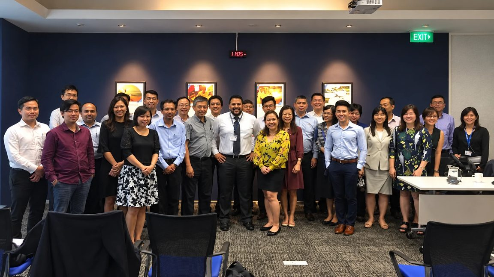
En F&C, los casos más sensibles no se delegan
Trabajas directamente con especialistas: ejecución técnica con enfoque estratégico.
Las grandes firmas suelen ser complejas y poco eficientes. En F&C obtienes acompañamiento directo y soluciones estratégicas personalizadas para cada caso.
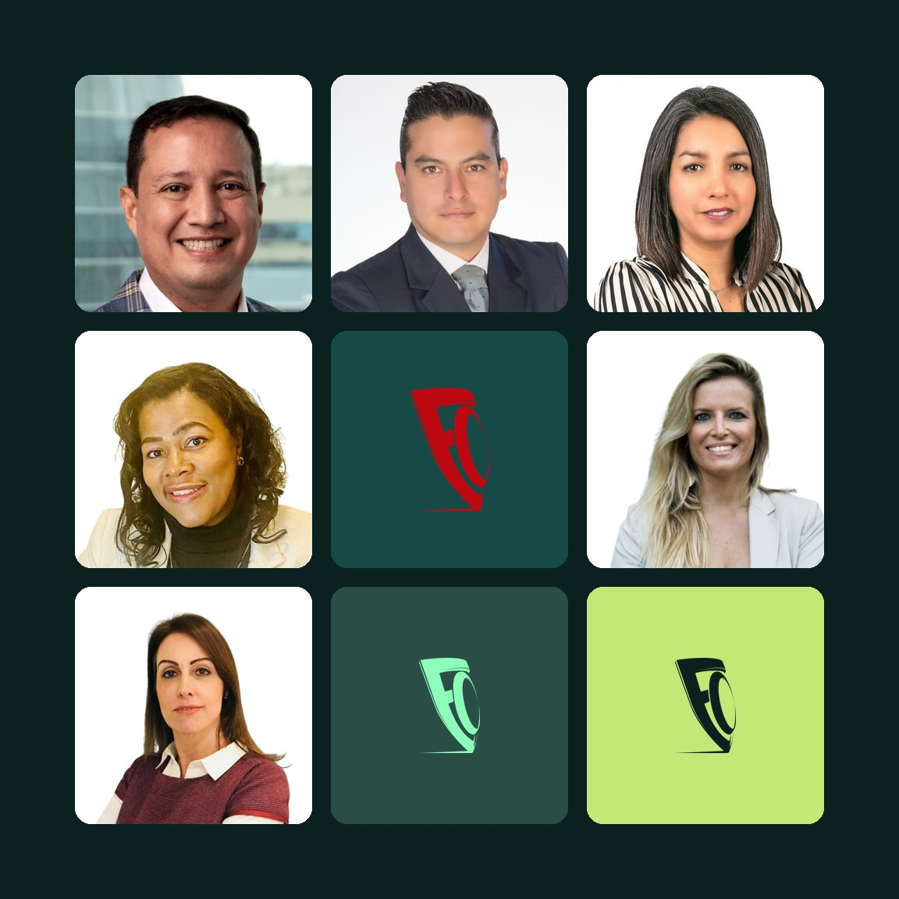
No esperes a que detone una crisis para actuar
Somos la calma en medio de la tormenta: reducimos riesgos antes de que se conviertan en crisis.
Controles, compliance y capacitación para estar preparados.
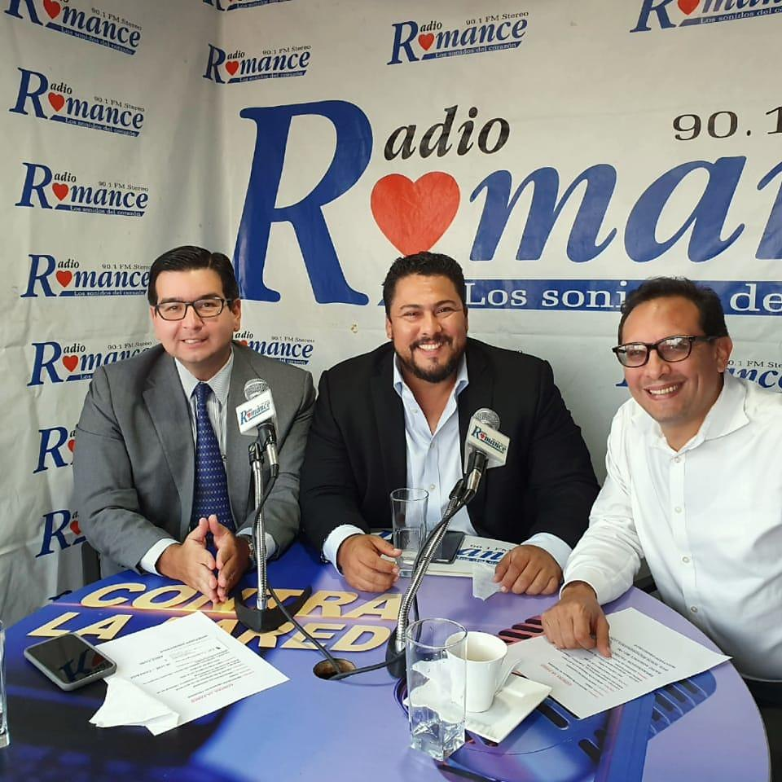
Expertos en cada frente
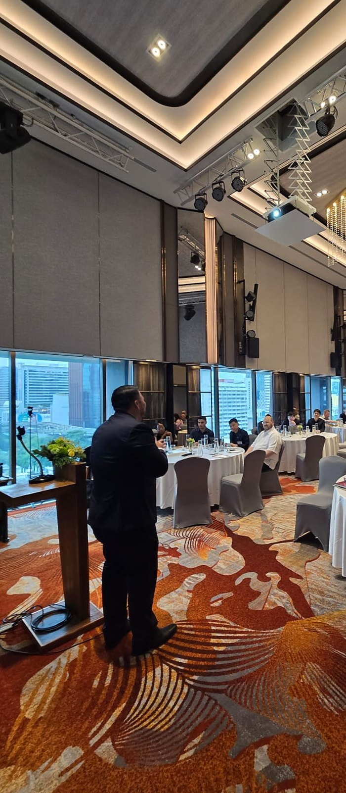
Fraude, robo de activos e información, ciberataques y faltas éticas como acoso laboral o sexual.
Denuncias internas, fraude, robo de información y litigios.
“Somos la calma en medio de la tormenta. No tienes que esperar a que detone una crisis para investigar.”
“Atendemos casos en Estados Unidos, México y América Latina desde la Ciudad de México.”
E-discovery, minería de datos y análisis transaccional forense y contable.
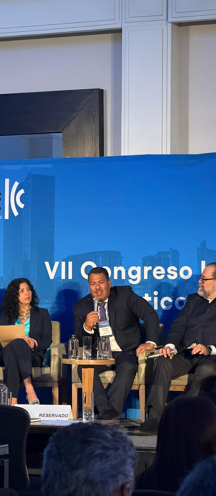
Convertimos el cumplimiento normativo en un sistema real, trazable y auditable.
Programas anticorrupción, sistemas de gestión ISO y línea ética.
“Integridad que protege. Estrategia que transforma. Confianza que trasciende.”
“Proyectos de compliance en Estados Unidos, México y América Latina.”
37001ISO 37001, ISO 37301, ISO 27001, ISO 27701 e ISO 42001.
Mapeo de procesos y riesgos, auditoría interna y prevención de pérdidas.
Control interno, auditoría interna y prevención de pérdidas.
“No solo investigamos riesgos. Protegemos reputaciones.”
“Diagnósticos de fraude para empresas familiares y corporativos en México.”
5 etapasAutoevaluación y kit anticorrupción y antifraude, totalmente confidencial.
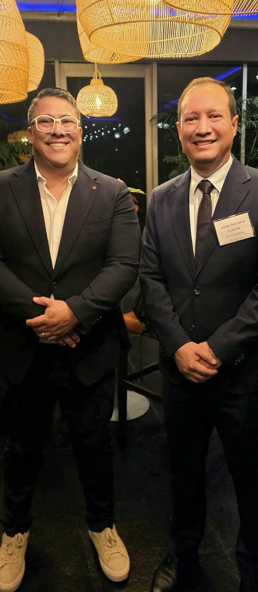
Todos los terceros generan un riesgo diferente. Los evaluamos antes de cerrar relaciones.
Evaluación de terceros, inteligencia corporativa y monitoreo.
“Anticipamos riesgos, investigamos la verdad y fortalecemos organizaciones.”
“Validamos terceros en Estados Unidos, México y América Latina.”
3 regionesEvaluaciones, inteligencia corporativa, gestión de contratos, auditoría y monitoreo.
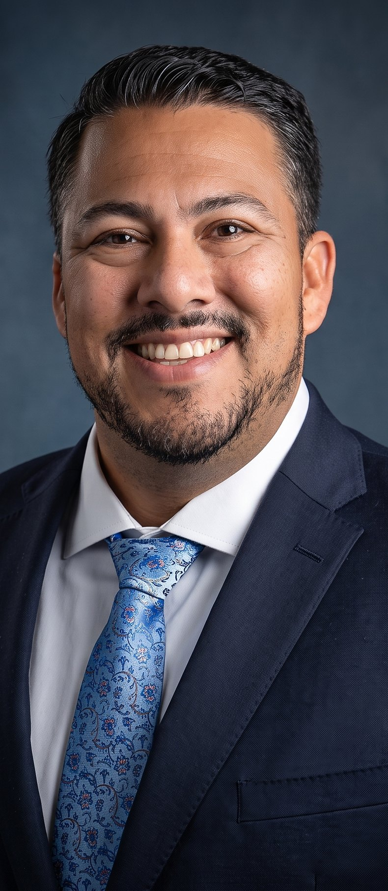
Representantes académicos en Latinoamérica de PECB (Canadá), con cursos e in-company.
Certificaciones ISO 37001, 37301, 42001 y 27001.
“10 años investigando. 10 años protegiendo. Y apenas el comienzo.”
“Sesiones en vivo de 17:00 a 20:00, hora de la Ciudad de México.”
17–20 hPECB, IACA, Tecnológico de Monterrey y LEC.
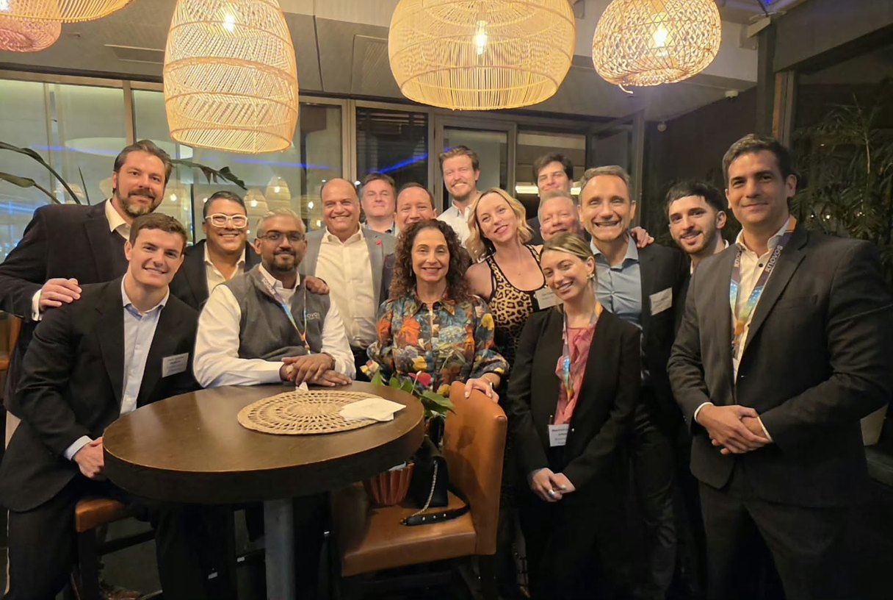
Actuar con certeza es una ventaja competitiva
Agenda una asesoría estratégica confidencial. Analizamos tu situación, el nivel de riesgo y el siguiente paso más seguro para tu organización.